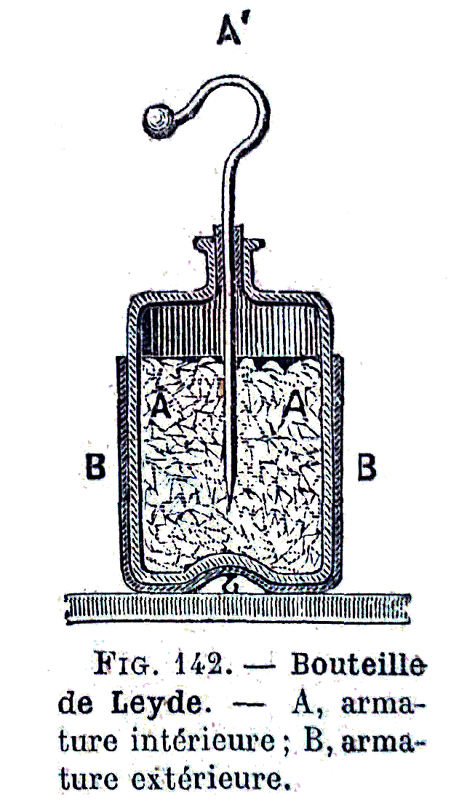
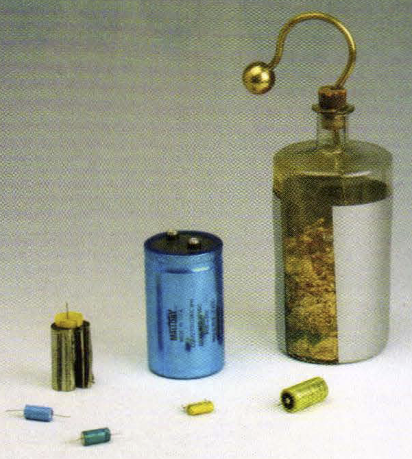
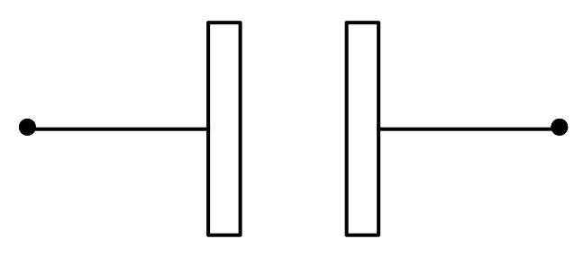
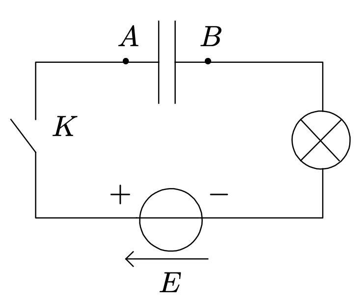
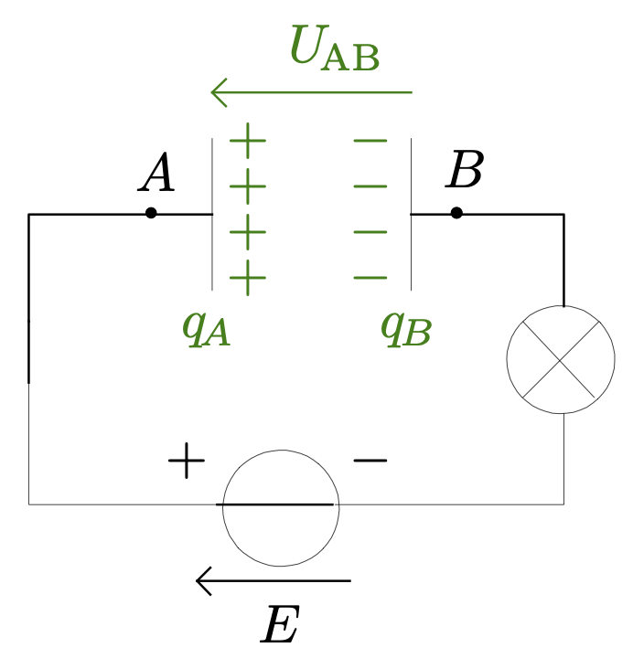
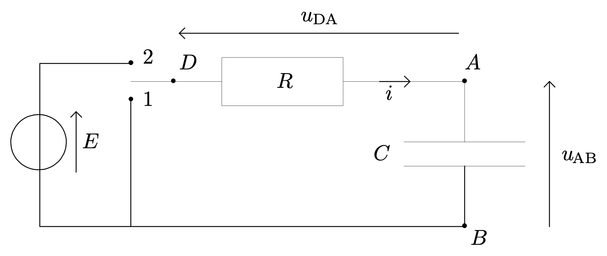
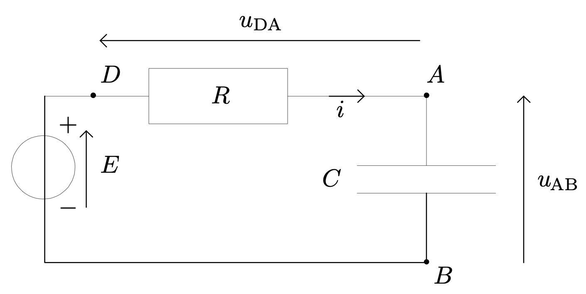
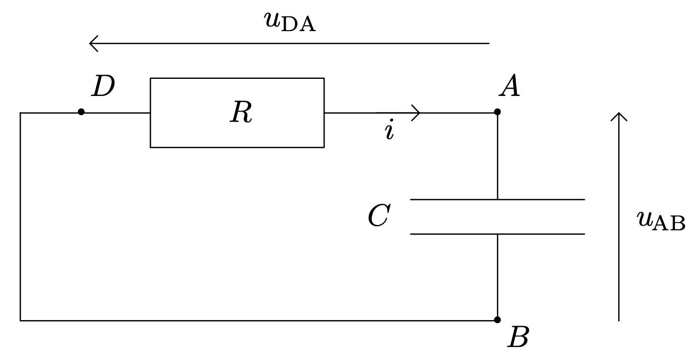

Les premiers condensateurs sont apparus vers 1745. Il s’agissait en fait d’une bouteille de Leyde : une fiole à moitié remplie d’eau dont l’ouverture était obturée par un bouchon de liège percé d’une tige métallique trempant dans l’eau.
La première application de ce condensateur était de donner des commotions (chocs électriques ou électrisations) au public dans les foires. Par exemple, à Versailles, on présenta au roi Louis XV l’expérience de la décharge d’une grosse bouteille de Leyde à travers le circuit formé de plus de deux cents courtisans.
Le physicien Volta a décrit le fonctionnement de la bouteille de Leyde vers 1782. Les condensateur se sont alors améliorés et surtout miniaturisés.
L’étude du condensateur va bien au-delà de la compréhension du fonctionnement de ce composant. De nombreux dispositifs, capteurs ou phénomènes (les orages par exemples) présentent sur un comportement capacitif.
Les condensateurs
Description
Symbole d’un condensateur 
Comment se comporte un condensateur dans un circuit électrique ?
On réalise un circuit électrique comportant, en série, un condensateur, une lampe, un générateur de tension continue et un interrupteur. 
- Que se passe-t-il lorsqu’on ferme l’interrupteur $K$ ?
Réponse
- Lorsqu’on ferme l’interrupteur $K$, la lampe s’éclaire, puis s’éteint progressivement (la durée au bout de laquelle elle s’éteint dépend du condensateur utilisé). Un courant transitoire apparaît donc dans le circuit.
- Le courant électrique ne peut s’établir durablement dans le circuit puisque celui-ci est en fait ouvert (coupé par la présence du diélectrique entre les armatures du condensateur). Le courant, lors du régime permanent est nul.
- Comment expliquer l’apparition d’un courant transitoire puis l’absence de courant lors du régime permanent ?
Réponse
-
Lorsqu’on ferme l’interrupteur, un courant électrique apparaît dans le circuit : des électrons arrivent au niveau de l’armature $B$ et des électrons quittent l’armature $A$. Comme le circuit est ouvert, les électrons ne peuvent que s’accumuler en $B$ ; l’armature $B$ se charge négativement.
Dans le même temps l’armature $A$ se charge positivement car aucun électron ne vient combler le déficit laissé par ceux qui sont partis. -
L’intensité du courant électrique est identique en tout point du circuit : le débit avec lequel les électrons arrivent en $B$ est égal au débit avec lequel les électrons quittent $A$ : $q_A(t) = -q_B(t)$.
-
Les charges électriques opposées, aux bornes du condensateur, donnent naissance à la tension électrique $u_{AB}$.
Le courant électrique finit par disparaître dans le circuit : la tension aux bornes de la lampe s’annule donc. Une application de la loi des mailles nous apprend que, dans le régime permanent $u_{AB} = E$. -
Dans le régime permanent, le générateur entretien donc un déséquilibre électrostatique qui le maintien de la charge du condensateur, c’est à dire le stockage de l’énergie électrique. 
- À tout moment, les charges électriques présentes sur les armatures d’un condensateur sont liées : $$q_A(t) = -q_B(t)$$ Rappel : la charge électrique s’exprime en coulomb (symbole : C).
- Un condensateur stockant des charges électriques sur ses armatures est dit chargé, ce stockage correspond à un stockage d’énergie électrique.
Charge électrique et intensité du courant électrique
- Quelle est la relation entre l’intensité du courant et les charges portées par les armatures ?
Réponse
- L’intensité du courant électrique est la charge électrique qui traverse une section quelconque du circuit chaque seconde, donc $i(t) = \dfrac{\mathrm{d}q(t)}{\mathrm{dt}}$.
- On choisit un sens de circulation pour $i(t)$ et on en déduit la relation : $i(t) = \dfrac{\mathrm{d}q_A(t)}{\mathrm{dt}}$ (les charges positives s’accumulent sur l’armature $A$) et $i(t) = -\dfrac{\mathrm{d}q_B(t)}{\mathrm{dt}}$ puisque $q_B(t) = -q_A(t)$.
Lorsqu’on souhaite exprimer la relation qui existe entre l’intensité du courant électrique et la charge portée par une armature,
- On choisit un sens de circulation pour le courant électrique.
- On écrit la relation entre l’intensité du courant électrique et la charge au niveau de l’armature.
Sur l’exemple choisi, $$i(t) = \dfrac{\mathrm{d}q_A(t)}{\mathrm{dt}} = -\dfrac{\mathrm{d}q_B(t)}{\mathrm{dt}}$$
- Si après calcul, $i>0$, alors le courant électrique circule effectivement dans le sens choisi (on a deviné correctement) et la fonction $q_A$ est croissante : les charges positives s’accumulent sur l’armature $A$.
- Si après calcul, $i<0$, le courant électrique circule dans le sens opposé au sens choisi et la fonction $q_A$ est décroissante : les charges positives quittent l’armature $A$.
Exprimer la charge $q_A$ aux bornes de l’armature $A$ après $\Delta t$ secondes.
Réponse
- $i(t) = I = \dfrac{\mathrm{d}q_A}{\mathrm{dt}}$.
- L’opération qui consiste à obtenir la fonction $q_A$ à partir de l’expression de sa dérivée s’appelle l’intégration. Ce concept sera développé en cours de mathématique. En Physique, il suffit de se poser la question : « Quelle fonction, une fois dérivée par rapport au temps, donne une constante ? »
Ici la réponse est simple $q_a(t) = I t + A$, où $A$ est une constante qui a la dimension d’une intensité, puisque $\dfrac{\mathrm{d}q_A}{\mathrm{dt}} = \dfrac{\mathrm{d}(I t + A))}{\mathrm{dt}} = (I t + A)\rq = I$ - En fait, $q_a(t) = I t + A$ n’est pas la solution mais une famille de solutions. Pour trouver la solution, il faut connaître une valeur particulière (souvent la valeur initiale) : ici on sait que le condensateur était initialement déchargé, donc $q_A(0) = \pu{0 A}$. On en déduit que $A = 0$ et $q_a(t) = I t$.
Capacité d’un condensateur
On peut montrer que :
À chaque instant, la charge $q_A$ de l’armature $A$ du condensateur est proportionnelle à la tension $u_{AB}$ entre ses armatures $A$ et $B$ :
$$q_A = C \cdot u_{AB}$$
$C$ est appelée capacité du condensateur.
Si $q_A$ est en coulomb (C) et $u_{AB}$ en volt (V), $C$ s’exprime en farad (F).
Remarque : $C>0$ donc $q_A$ et $u_{AB}$ sont de même signe.
Remarque : La capacité $C$ est donc la charge stockée lorsque la tension entre les deux armatures est égale à $\pu{1 V}$.
Quelques ordres de grandeurs
| Utilisation | Capacité en farad (F) |
|---|---|
| mémoire d’ordinateur | 0,1 à 1 |
| allumage de voiture | $10^{-4}$ |
| flash électronique | $10^{-5}$ |
| détection radio | $10^{-9}$ à $10^{-12}$ |
Charge d’un condensateur par un échelon de tension
L’association en série d’un condensateur de capacité $C$ et d’un conducteur ohmique de résistance $R$ constitue un dipôle $(R, C)$.
Étude expérimentale
Résultats expérimentaux
On réalise le montage suivant :  On bascule le commutateur en position 2 et on enregistre les tensions $u_{DA}$ et $u_{AB}$. On obtient les enregistrements suivants :
- Identifier les courbes qui correspondent :
- à force électromotrice (fem), c’est à dire à la tension aux bornes du générateur ;
- à la tension $u_{DA}$ aux bornes de la résistance ;
- à la tension $u_{AB}$ aux bornes du condensateur.
Réponse
- La tension aux bornes du dipôle $(R, C)$ varie brutalement puisqu’elle passe de la valeur $\pu{0 V}$ à la valeur $E$. Ce comportement correspond à celui de la courbe verte.
- On sait que le courant électrique finit par disparaître dans le circuit. Comme $u_{DA}$ est la tension aux bornes de la résistance, $u_{DA} = R i_{DA}$. Si l’intensité du courant électrique s’annule, alors la tension $u_{DA}$ doit aussi s’annuler. Ce comportement correspond à celui de la courbe mauve.
- La loi des mailles nous donne : $-E + u_{DA} + u_{AB} = 0 \iff u_{AB} = E - u_{DA}$. Ce comportement est celui de la courbe orange.
- Le condensateur d’un dipôle $(R, C)$ soumis à un échelon de tension ne se charge pas instantanément : la charge du condensateur est un phénomène transitoire.
- Une fois la charge achevée, le régime est dit permanent et constant.
- Les tensions aux bornes du dipôle $(R,C)$ et de la résistance sont discontinues en $t=0$ mais la tension aux bornes du condensateur est continue à la date $t=0$.
Constante de temps
- Faire évoluer les valeurs de la résistance et de la capacité. Observer l’influence de ces deux paramètres sur la durée de charge du condensateur (ou la durée de décroissance de l’intensité du courant électrique).
Réponse
- Démontrer que le produit $R \cdot C$ a la dimension d’un temps.
Réponse
- $[R] = \dfrac{U}{I}$ (une résistance est une tension sur une intensité);
- $[C] = \dfrac{[Q]}{U}$ (une capacité est une charge sur tension). Or $[Q] = I \cdot T$ (intensité fois temps). Donc $[C] = \dfrac{I \cdot T}{U}$.
- Finalement $[R\cdot C] = \dfrac{U}{I} \times \dfrac{I \cdot T}{U} = T$.
On va montrer que le régime transitoire est pratiquement achevé après une durée égale à $5\tau$.
Étude théorique
Équation différentielle
À la date $t \geqslant 0$ le circuit est : 
- En appliquant la loi des mailles, trouver la relation entre les tensions $E$, $u_{DA}$ et $u_{AB}$.
Réponse
$$-E + u_{DA} + u_{AB} = 0$$ Cette équation fait intervenir deux fonctions inconnues :
- celle que l’on cherche $u_{AB} (t)$ ;
- la fonction $u_{DA} (t)$.
L’objectif des prochaines questions est de parvenir à exprimer $u_{DA} (t)$ en fonction de $u_{AB} (t)$ de façon à pouvoir résoudre l’équation.
- Écrire la relation qui existe entre l’intensité $i(t)$ du courant électrique et la tension $u_{DA}$.
Réponse
$$u_{DA} = R\, i$$
- Écrire la relation qui existe entre la charge $q_A$ au niveau de l’armature $A$ du condensateur et la tension $u_{AB}$.
Réponse
$$q_A = C\, u_{AB} $$
- Écrire la relation qui existe entre l’intensité $i$ du courant électrique et la charge $q_A$ au niveau de l’armature $A$ du condensateur.
Réponse
$$i = \dfrac{\mathrm{d}q_A}{\mathrm{dt}}$$
- En déduire la relation qui existe entre l’intensité $i$ du courant électrique et la tension $u_{AB}$.
Réponse
$$i = C\, \dfrac{\mathrm{d}u_{AB}}{\mathrm{dt}}$$
- En déduire la relation qui existe entre les tensions $u_{DA}$ et $u_{AB}$.
Réponse
$$u_{DA} = RC\, \dfrac{\mathrm{d}u_{AB}}{\mathrm{dt}}$$
- Écrire à nouveau la loi des mailles de façon à ce qu’elle ne fasse apparaître qu’une seule inconnue, la tension $u_{AB}$.
Réponse
$$RC\, \dfrac{\mathrm{d}u_{AB}}{\mathrm{dt}} + u_{AB} = E$$ ou $$\dfrac{\mathrm{d}u_{AB}}{\mathrm{dt}} + \dfrac{u_{AB}}{RC} = \dfrac{E}{RC}$$
Cette expression est une équation différentielle du premier ordre à coefficients constants.
Solution de l’équation différentielle
On montre, en mathématiques, qu’une famille de solutions de cette équation différentielle est : $$u_{AB}(t) = A + B e^{-t/\tau}$$ où $A$, $B$ et $\tau$ sont des constantes.
- Montrer que la famille de solutions donnée vérifie bien l’équation différentielle et en déduire l’expression de $\tau$.
Réponse
On substitue $u_{AB}$ par la famille de solution dans l’équation différentielle.
Puisque $\dfrac{\mathrm{d}u_{AB}}{\mathrm{dt}} = \dfrac{\mathrm{d}(A + B e^{-t/\tau})}{\mathrm{dt}} = -\dfrac{B}{\tau} \, e^{-t/\tau}$ l’équation devient $-\dfrac{B}{\tau} \, e^{-t/\tau} + \dfrac{A}{RC} + \dfrac{B}{RC} e^{-t/\tau} = \dfrac{E}{RC} \iff \left( - \dfrac{1}{\tau} + \dfrac{1}{RC} \right)\, B e^{-t/\tau} + \dfrac{A}{RC} = \dfrac{E}{RC}$.
-
Le terme à droite de l’égalité, $\dfrac{E}{RC}$ ne dépend pas du temps. Celui à gauche de cette même égalité ne peut donc pas dépendre du temps. Ceci n’est possible que si $\dfrac{1}{\tau} + \dfrac{1}{RC} = 0 \iff \boxed{\tau = RC}$.
-
On en déduit que $\boxed{A = E}$
Finalement, la famille de solutions convient à la condition qu’elle s’écrive $$\boxed{u_{AB}(t) = E + B e^{-t/\tau} }$$ avec $\tau = RC$.
- À partir des conditions initiales — le condensateur est initialement déchargé —, déterminer la fonction solution du problème.
Réponse
- $u_{AB}(0) = 0 = E + B e^{-0/\tau}= E + B \iff \boxed{B = -E}$
Finalement
$$\boxed{u_{AB}(t) = E (1 - e^{-t/\tau}) }$$ avec $\tau = RC$.
On retrouve donc bien le comportement de l’étude expérimentale. En particulier, la fonction est bien continue en $t=0$ et sa limite à l’infini est $E$.
Signification physique de $\tau$
- Donner l’expression de la tension $u_{AB}$ à la date $t=\tau$.
Réponse
$u_{AB}(\tau) = E (1 - e^{-\tau / \tau}) = E (1 - e^{-1}) = \pu{0,63}\, E$.
- On note $t_{1/2}$ la durée au bout de laquelle $u_{AB} = \dfrac{E}{2}$. Donner l’expression de $t_{1/2}$ en fonction de $\tau$ (nous retrouverons la grandeur $t_{1/2}$, demi-charge, plusieurs fois cette année).
Réponse
$u_{AB}(t_{1/2}) = E (1 - e^{-t_{1/2} / \tau}) = \dfrac{E}{2} \iff e^{-t_{1/2} / \tau} = \dfrac{1}{2} \iff \dfrac{-t_{1/2}}{\tau} = \ln \left( \dfrac{1}{2} \right) \iff \boxed{t_{1/2} = \tau \ln 2}$.
Expression de l’intensité du courant électrique
- Déterminer l’expression de la fonction $i(t)$ et donner ses caractéristiques.
Réponse
-
$i(t) = \dfrac{\mathrm{d}q_A}{\mathrm{dt}}$ et $q_A = C\, u_{AB}$, donc $i(t) = C\, \dfrac{\mathrm{d}u_{AB}}{\mathrm{dt}}$.
-
Si on substitue $u_{AB}$ par son expression, on obtient $i(t) = C\, \dfrac{\mathrm{d}(E (1 - e^{-t / \tau}) )}{\mathrm{dt}}$ donc $ i(t) = \dfrac{CE}{\tau}\, e^{-t / \tau} \iff \boxed{i(t) = \dfrac{E}{R}\, e^{-t / \tau} }$
-
À la date $t = O^-$, aucun courant ne circule dans le circuit (puisqu’il est ouvert), donc $i(0^-) = 0$. À la date $t = 0^+$, $i(0^+) = \dfrac{E}{R} > 0$. L’intensité du courant électrique est une fonction discontinue.
-
$i(t)$ est une fonction décroissante qui a pour limite 0 à l’infini.
- Démontrer que $i(t_{1/2}) = \dfrac{I_0}{2}$ avec $I_0 = \dfrac{E}{R}$.
Décharge d’un condensateur dans une résistance
Comment varient la tension aux bornes d’un condensateur d’un dipôle $(R, C)$ et l’intensité du courant qui le traverse lors de la décharge du condensateur à travers la résistance ?
Étude expérimentale
On bascule le commutateur en position 1 et on enregistre les tensions $u_{DA}$ et $u_{AB}$. On obtient les enregistrements suivants :
- Identifier les courbes qui correspondent :
- à la tension $u_{DA}$ aux bornes de la résistance ;
- à la tension $u_{AB}$ aux bornes du condensateur.
Réponse
-
La tension aux bornes d’un condensateur est une fonction continue : $u_{AB}(O^-) = E$, donc $u_{AB}(O^+) = E$. De plus, les charges électriques quittent l’armature $A$ ; la tension $u_{AB}(t)$ doit donc diminuer au cours du temps jusqu’à s’annuler… tout en restant positive.
Ce comportement est celui de la courbe bleu. -
La tension aux bornes de la résistance est l’image de l’intensité du courant qui circule dans le circuit. Comme les charges quittent l’armature $A$, le courant électrique ne circule pas dans le sens choisi mais dans le sens opposé. Cette intensité est négative.
De plus, le courant électrique finit par disparaître, une fois l’équilibre électrique retrouvé sur les armatures du condensateur. L’intensité de ce courant doit donc s’annuler. Ce comportement est celui de la courbe mauve.
Étude théorique
Équation différentielle
- À la date $t \geqslant 0$ le circuit est : 
- $u_{AB}(0) = E$ et $u_{DA}(0)=0$.
- En appliquant la loi des mailles, trouver la relation entre les tensions $u_{DA}$ et $u_{AB}$.
Réponse
$$u_{DA} + u_{AB} = 0$$ Cette équation fait intervenir deux fonctions inconnues :
- celle que l’on cherche $u_{AB} (t)$ ;
- la fonction $u_{DA} (t)$.
L’objectif des prochaines questions est de parvenir à exprimer $u_{DA} (t)$ en fonction de $u_{AB} (t)$ de façon à pouvoir résoudre l’équation.
- Écrire la relation qui existe entre l’intensité $i(t)$ du courant électrique et la tension $u_{DA}$.
Réponse
$$u_{DA} = R\, i$$
- Écrire la relation qui existe entre la charge $q_A$ au niveau de l’armature $A$ du condensateur et la tension $u_{AB}$.
Réponse
$$q_A = C\, u_{AB} $$
- Écrire la relation qui existe entre l’intensité $i$ du courant électrique et la charge $q_A$ au niveau de l’armature $A$ du condensateur.
Réponse
$$i = \dfrac{\mathrm{d}q_A}{\mathrm{dt}}$$
- En déduire la relation qui existe entre l’intensité $i$ du courant électrique et la tension $u_{AB}$.
Réponse
$$i = C\, \dfrac{\mathrm{d}u_{AB}}{\mathrm{dt}}$$
- En déduire la relation qui existe entre les tensions $u_{DA}$ et $u_{AB}$.
Réponse
$$u_{DA} = RC\, \dfrac{\mathrm{d}u_{AB}}{\mathrm{dt}}$$
- Écrire à nouveau la loi des mailles de façon à ce qu’elle ne fasse apparaître qu’une seule inconnue, la tension $u_{AB}$.
Réponse
$$RC\, \dfrac{\mathrm{d}u_{AB}}{\mathrm{dt}} + u_{AB} = 0$$ ou $$\dfrac{\mathrm{d}u_{AB}}{\mathrm{dt}} + \dfrac{u_{AB}}{RC} = 0$$
Cette expression est une équation différentielle du premier ordre à coefficients constants.
Solution de l’équation différentielle
On montre, en mathématiques, qu’une famille de solutions de cette équation différentielle est : $$u_{AB}(t) = A + B e^{-t/\tau}$$ où $A$, $B$ et $\tau$ sont des constantes.
- Montrer que la famille de solutions donnée vérifie bien l’équation différentielle et en déduire l’expression de $\tau$.
Réponse
On substitue $u_{AB}$ par la famille de solution dans l’équation différentielle.
Puisque $\dfrac{\mathrm{d}u_{AB}}{\mathrm{dt}} = \dfrac{\mathrm{d}(A + B e^{-t/\tau})}{\mathrm{dt}} = -\dfrac{B}{\tau} \, e^{-t/\tau}$ l’équation devient $-\dfrac{B}{\tau} \, e^{-t/\tau} + \dfrac{A}{RC} + \dfrac{B}{RC} e^{-t/\tau} = 0 \iff \left( -\dfrac{1}{\tau} + \dfrac{1}{RC} \right)\, B e^{-t/\tau} + \dfrac{A}{RC} = 0$.
-
Le terme à droite de l’égalité, $0$ ne dépend pas du temps. Celui à gauche de cette même égalité ne peut donc pas dépendre du temps. Ceci n’est possible que si $\dfrac{1}{\tau} + \dfrac{1}{RC} = 0 \iff \boxed{\tau = RC}$.
-
On en déduit que $\boxed{A = 0}$
Finalement, la famille de solutions convient à la condition qu’elle s’écrive $$\boxed{u_{AB}(t) = B e^{-t/\tau} }$$ avec $\tau = RC$.
- À partir des conditions initiales déterminer la fonction solution du problème.
Réponse
- $u_{AB}(0) = E = B e^{-0/\tau}= B \iff \boxed{B = E}$.
Finalement
$$\boxed{u_{AB}(t) = E e^{-t/\tau} }$$ avec $\tau = RC$.
On retrouve donc bien le comportement de l’étude expérimentale. En particulier, la fonction est bien continue en $t=0$, positive, décroissante et sa limite à l’infini est $0$.
- Déterminer l’expression de la fonction $i(t)$ et donner ses caractéristiques.
Réponse
-
$i(t) = \dfrac{\mathrm{d}q_A}{\mathrm{dt}}$ et $q_A = C\, u_{AB}$, donc $i(t) = C\, \dfrac{\mathrm{d}u_{AB}}{\mathrm{dt}}$.
-
Si on substitue $u_{AB}$ par son expression, on obtient $i(t) = C\, \dfrac{\mathrm{d}(E e^{-t / \tau} )}{\mathrm{dt}} = CE\, \dfrac{\mathrm{d}(e^{-t / \tau} )}{\mathrm{dt}}$, puisque $E$ est une constante, donc $ i(t) = -\dfrac{CE}{\tau}\, e^{-t / \tau} \iff \boxed{ i(t) = -\dfrac{E}{R}\, e^{-t / \tau} }$
-
À la date $t = O^-$, aucun courant ne circule dans le circuit (puisqu’il est ouvert), donc $i(0^-) = 0$. À la date $t = 0^+$, $i(0^+) = -\dfrac{E}{R} < 0$. L’intensité du courant électrique est une fonction discontinue et négative.
-
$i(t)$ est une fonction décroissante en valeur absolue qui a pour limite 0 à l’infini.